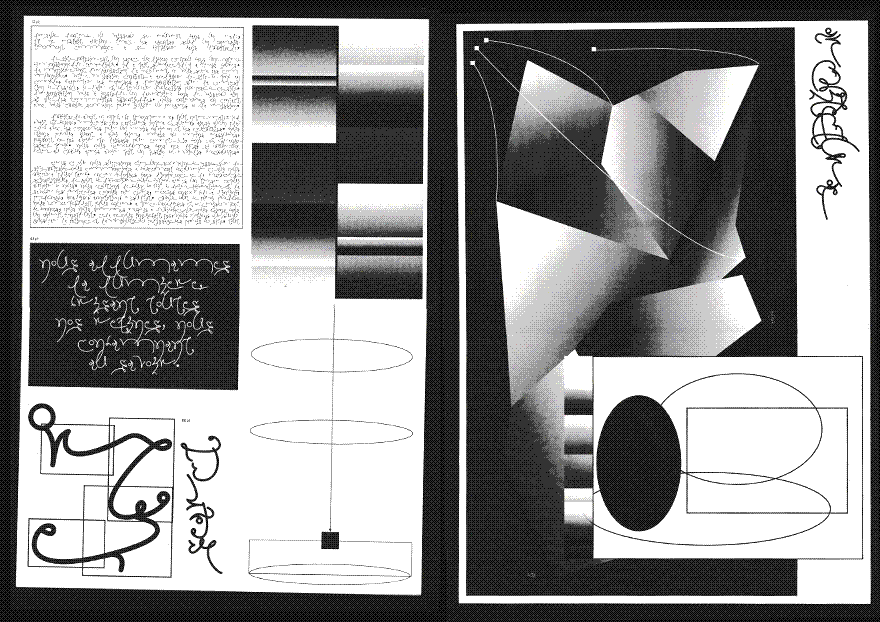
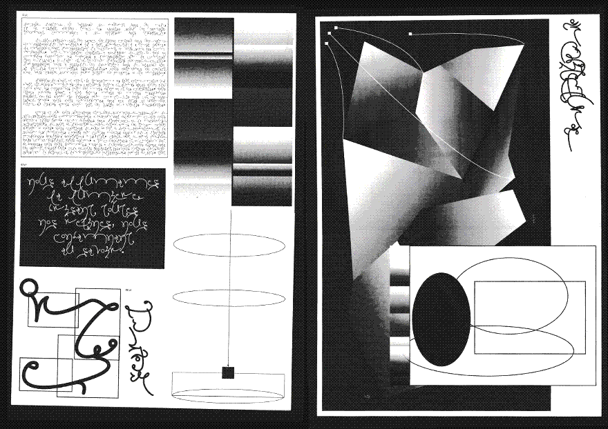

Atmos-scapes,
master's thesis, 2022


Corps Célestes,
photography catalog, 2022
with Léa Govignon & Youngjoo Kang,
Book, 192×260 mm, for Biennale de Photo de Mulhouse 2022, four posters folded + a folded cover bound together.
Indesign + JSX + Processing + Python
Book, 192×260 mm, for Biennale de Photo de Mulhouse 2022, four posters folded + a folded cover bound together.
Indesign + JSX + Processing + Python


Syowa Auroral Observation,
archive book, 2021
Book, 192×260 mm, 364 p. , Laser printed on glossy & recycled, white paper. Handbound ( sewn ), Python + HTML + CSS + Paged.js

Tueuse,
font+specimen, 2021
Rodoid, laser black and white printing, 32p. Archive clip binding.

De la terre à l'ivresse,
book, 2021
14×19.5 cm Book, 96p.
laser printing on Munken Print White 80g.


Spec Orchard,
font specimen, 2021
Edition, A3, 6p.,
Laser printed on grey reccyled paper 80g/m2
4 inserts laser printed on silver paper 125g/m2
Orchard by Rory King
 

Controverses, mode d'emploi,
Book, 2020
I'm assisting Sarah Garcin
for FORCCAST, Sc. Po. Medialab,
320p., Swiss binding
offset printed on Munken Print White
HTML + CSS + JS
HTML + CSS + JS

Frutos Antiquaire,
font+specimen, 2020
with Emilie Raoul
15×25 cm Book, 48p. laser printing on glossy paper.
Has a booklet of 20p. printed on recycled paper.

Nuits Halogènes,
photographs, 2020
digital photographs, everything flickers